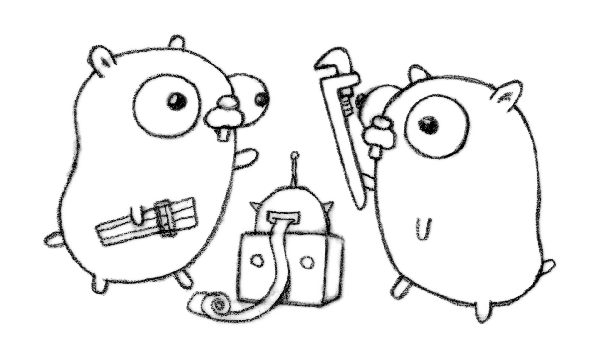
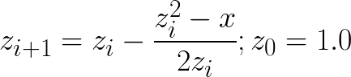

Google Go (2½)
Wir haben eine sehr go-reiche Woche gehabt.
Umfrage: Wer hat go gemacht seit dem letzten mal?
Wir werden die nächsten 40 Minuten etwas schneller reden.
Agenda:
- Einführung
- Überblick wie GO Entwicklung aussieht/Demo
- Spracheinführung
- Übung
- Go extended features
- Überraschung
Das wird kein Go Tutorium, es geht uns eher drum dass ihr einfach mal so seht wie die Sprache so aussieht und wie man damit Probleme löst.
Neue Sprachen lernen erfordert leider immer noch Übung :)
Das ist übrigens immer noch gopher. Wir mögen ihn auch immer noch. Er ist immer noch putzig.
Was ist Go
- Aktuelle Version: 1.4 (Dezemeber 2014)
- Drei haben Erfahrung mit Sprachdesign
- Go hat durchdachtes Design an vielen Ecken
Eine Programmiersprache.
- Erster Release 2009. Stable 1.0 version seit 2012
- Nebenläufig, imperativ & objektorientiert.
- Von Ken Thompson, Rob Pike & Robert Griesemer.
- Strong & Static (Duck) typing; Garbage collected.
,, Java tries to be successor of C++.''
,, Go a successor of C. ''
- Nachbesserung zum letzten Mal -> doch viel Go im ,,backend''
- Dropbox -> Performancekritische sachen in Go
- Github, Youtube -> Backendinfrastruktur teile in Go
Go Projekte
Bei genauerer Betrachtung schon einige:
- Google Doodles
- Google App Engine
- Youtube
- Docker
- Dropbox
- …
Allgemein, viele Backendprojekte:


Hello World
- Go sieht aus wie C von Python vergewaltigt
- Konstrukte beider Sprachen eingefloßen
- << Folie erklären >>
- <<< JETZT ERSTMAL SWITCH ZUR Nächste FOLIE >>>
package main import "os" import "fmt" func main() { if len(os.Args) > 1 && os.Args[1] == "mandarin" { fmt.Println("Hello, 世界") } else { fmt.Println("Hello, World!") } }
Demo
- Jetzt werden wir praktische
- GOPATH zeigen, workspace zeigen
- cd ~/go/bin/
- mkdir -p src/github.com/qitta/helloworld
- cd src/github.com/qitta/helloworld
- go tool (go help zeigen)
- Tools: debugger, profiler, documentation tool, formatter, static analyzer,
build system, package manager... und compiler.
- vim helloworld.go # go fmt erwähnen, go def, autocompletion, go lint
- go install / go build/ go run
- Es kompiliert so schnell dass man es als Skriptsprache nehmen kann: go run
- ausführen helloworld
- vim helloworld_test.go
- go test
- vim helloworld_test.go # benchmark schreiben
- go test -bench Add
- debugger: man kann den standard gdb verwenden.
$ go help
Datentypen
- <<< GO Playground googeln >>>
- Umgekehrte Typreihenfolge
- Standarddatentypen wie bei jeder anderen Programmiersprache.
(int, float, byte, rune, string).
- Kurzschreibweise nur innerhalb Funktionen erlaubt.
- Unicode Bezeichner sind übrigens erlaubt.
- Kein up/downcasting wie in C/Java.
- Keine Pointerarithmetik
- Variablen immer definiert auf nil/0 etc
- Maps immer typisiert
- Interne Verarbeitung UTF8
Primitive Datentypen:
var name string = "Berta" // Normale Schreibweise Δtime := 42.0 // Kurzschreibweise (inferred) a, b, c := 1.0, 77, "Helmut" // Multiple Zuweisung var balance int = int(2.0) // Explizite Konversion var pb *int = &balance // Pointer zu balance. (iiih!)
Maps:
hostToIP := make(map[string]string) // Hashtable hostToIP["localhost"] = "127.0.0.1" // Zuweisung
Arrays & Slices:
animals := [...]string{"cat", "moose", "owl"} // Array saneAnimals := animals[:2] // Slices fmt.Println(animals, saneAnimals) /* ↦ [cat moose owl] [cat moose] */
if
- Entpspricht C meist
- Unterschied: Kein Klammern () -> Go Blocks {}
- << Folie erklären >>
if name == "wolfgang" { fmt.Println("vermutlich männlich.") }
Mit optionaler Kurzdeklaration:
if personId := GetId(name); personId > 0 { fmt.Println("Person ID was", personId) } else if personId == 0 { fmt.Println("Placeholder person id.") } else { fmt.Println("Invalid person.") }
switch
switch os := runtime.GOOS; os { case "linux": fmt.Println("[good descision!]") fallthrough default: fmt.Printf("%s.", os) }
Bedingungsloses switch als if/else Ersatz:
switch now := time.Now(); { case now.Hour() < 13: fmt.Println("Guten Morgen!") case now.Hour() < 17: fmt.Println("Guten Nachmittag!") default: fmt.Println("Guten Abend.") }
for
- Kein Preinkrement
- Kein while loop, nur for. Auch for range.
- Man kann alles weglassen. -> Endlosschleife
Normales C for:
for i := 0; i < 10; i++ { // … }
while Schleife:
for { if something { break // or continue } }
foreach Schleife:
for host, ip := range hostToIP { fmt.Println(host, "↦", ip) }
func
- <<< Folie erklären >>>
- Go hat keine Defaultparameter. Leider.
- Man kann auch return values benennen und sie dadurch direkt setzen.
func GetCoolnesFactor(language string) int { switch language { case "java": return 1 case "python": return 7 case "golang": return 8 default: return -1 } }
Fehlerbehandlung mit mehreren Rückgabewerten:
func div(a, b int) (int, int, error) { if b == 0 { return 0, 0, errors.New("divisor should not be 0") } return a / b, a % b, nil }
Closures
- Go unterstützt Higher Order Functions
- Closure = anonyme Funktion die auf Erstellungskontext zugreifen kann.
- Python ähnliche Generatoren.
func fibonacciEngine() func() int { f1, f2 := 0, 1 return func() int { f2, f1 = f1 + f2, f2 return f1 } } func main() { fib := fibonacciEngine() for i := 0; i < 10; i++ { fmt.Println(fib()) } }
- Kommen wir zur ersten Aufgabe von 20 heute..
- 2-3 Minuten Pause.
- Zeit 5-10 Minuten, der erste bekommt Kekse!
- Startwert für z auswählen (1.0)
- Iterativ z berechnen, zurückgeben. (wieviel reichen denn aus?)
- Plus: Iteration bei geringem Delta abbrechen.
- Name: Newtonsche Quadratwurzelannäherung
- Als nächstes Extended Features von Go
Aufgabe 1/20
Quadratwurzel iterativ selber approximieren:
package main import "fmt" import "math" func Sqrt(x float64) float64 { // …? } func main() { better, worse := math.Sqrt(42), Sqrt(42) fmt.Printf("%g - %g = %g", better, worse, better - worse) }
Web-Playground: https://play.golang.org/
OOP
<explain slide>
- In anderen Sprachen: Klassen, Objekte, Instanzen
- In Go: Typen, Interfaces (was sind Typen sind) und Values
- Interfaces: Sammlung von Methoden.
- Unterschied philsophischer Natur
- Duck typing Prinzip (wenn es sich wie ne Katze benutzt werden kann, ist es ne Katze)
Go hat eigentlich keine Klassen oder Vererbung.
type Animal interface { getName() string // Interface-Anforderung } type Cat struct { Name string // Membervariable } func (c Cat) getName() string { return c.Name } func GreetAnimal(animal Animal) { fmt.Println("Hello, " + animal.getName()) } func main() { GreetAnimal(Cat{Name: "Garfield"}) }
Packages
- Ein Paket kann auf mehrere Dateien mit selben package xy aufgeteilt sein.
- Public/Private durch Groß/kleinschreibung definiert.
- import durch vollen packagenamen, nutzung durch letzten teil. (fmt.Xy)
- Mainmethode immer im package main.
$GOPATH/github.com/studentkittens/tux/tux.go
package tux func Name() { return "Tux" }
$GOPATH/main.go
package main import ( "fmt" "github.com/studentkittens/tux" ) func main() { fmt.Println(tux.Name()) }
Errors
- << Folie erklären >>
- defer erklären.
- Beispiele sind äquivalent. (Auch python context manager)
- Die Beispiele sind sogar (fast) gleich lang!
- Es gibt auch noch panic + defer/recover.
- Die sind aber mehr für ernste absolute unerwartete Fehler.
Python:
try: with open('/nope', 'r') as fd: print(fd.read()) except FileNotFoundError: print('Dude?!')
Das Gleiche in Go:
if fd, err := os.Open("/nope"); err == nil { defer fd.Close() fmt.Println(ioutil.ReadFile(fd)) } else { fmt.Println("Dude?!") }
Goroutinen
Parallele Go Entsprechung eines Python Generator:
- Go ist eine Sprache wo parallele Programmierung sehr einfach ist, da in Sprache eingebaut.
- Man kann einfach durch go func() Aufgaben nebenläufig starten.
- Go routinen sind nicht nur nebenläufig sondern meist auch parallel... aber! achtung!
- Go hat einen eigenen Scheduler der die go routinen auf tatsächliche threads aufteilt. Ob eine go routine tatsächlich parallel ist, ist ein "Implementierungsdetail"
- Channels erklären, gepuffer, ungepuffert
- unterschied zu anderen sprachen: man benötigt eine threadlib und zB AsyncQueues zur Kommunikation
- Folie erklären
Go routines:
func fibonacci(n int, c chan int) { x, y := 0, 1 for i := 0; i < n; i++ { c <- y x, y = y, x+y } close(c) } func main() { c := make(chan int, 10) go fibonacci(100, c) for i := range c { fmt.Println(i) } }
select
- In go kann man sich mit den eingebauten Mitteln sehr einfach einen Eventloop bauen
- Ein Eventloop wird ja in der asynchronen programmierung genutzt um bei auftreteten Ereignissen reagieren zu können. So können nichtblockend v viele Ereignisse nebenläufig abgearbeitet werden.
- [Vergleich select mit socket-select bei linux]
- tick ist ein channel
- <<< folie erklären >>>
Ein simpler Eventloop in Go:
func main() { tick := time.Tick(100 * time.Millisecond) boom := time.After(500 * time.Millisecond) for { select { case <-tick: fmt.Println("tick.") case <-boom: fmt.Println("BOOM!") return default: fmt.Println(" .") time.Sleep(50 * time.Millisecond) } } }
Pluspunkte
- Beinahe die Schnelligkeit von C…
- …kombiniert mit der Einfachheit und Kürze von Python.
- Große Standardlibrary (Batteries included; Websockets!)
- Kompiliert schnell genug um als Skriptsprache zu dienen.
- Viele gängige Werkzeuge sind Bestandteil der Sprache.
- Open Source und von Google supported.
- Einfaches Deployement. (eine statische gelinkte Binary)
GObject -> Gtk und co.
Viele Leute wollen Go wie ihre gewohnte Sprache benutzen. Doofe Idee, aber Menschen sind halt Gewohnheitstiere.
Man kann mit varargs optionale parameter faken.
Minuspunkte
- Ungewohnt ⎯ vor allem für Java Programmierer.
- Einige fehlende Bibliotheken (GObject!) noch nicht portiert.
- Binaries sind ein bisschen groß (~2 MB per HelloWorld)
- Noch keine Generics. (…Nachteil?)
- Keine Listcomprehensions. (😕)
- Keine Defaultparameter. (😞)
- Wenige Go-Programmierer auf dem Markt. (😃)
- Wir haben euch auch noch ein kleines Beispiel mitgebracht
- Vorher: kleines Beispiel mit Martini
- Heute: Kleiner Webserver mit der standard net/http lib.
Catlight Demo

(...oder wie Gopher Licht ins Dunkel brachte)
BOOK!
If you really want to dive in Go, I can recommend those:
Letzte Worte
(Fragen?)